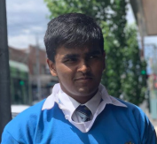

Sahil Balgovind

Bio
- Sahil Balgovind is a 2nd Year GC drama nerd, cooking enthusiast and an environmental activist, extremely passionate about environmental protection and mitigating the effects of climate change.
- He is currently interested in agroforestry as a method to instigate sustainable farming and reduce the impact of agriculture on the planet.
- James spoke to Sahil about experiences in GC so far, how he found GC, the initiatives he’s taking a part in and future aspirations that he has. Read further below for some 1st Year GC hacks!
Key Themes
- Environmental activism.
- Art & Science.
- Volunteering within community.
GC In One Word
Hectic.
Interview
Let’s start at the very beginning of this GC journey. What made you want to apply for GC and how did you find out about GC?
I wasn’t the type of person who always knew what they wanted to do and has everything planned out years in advance, so GC wasn’t something that I strategically planned for, but more something that happened.
My passion all throughout high school was in design, fashion and art, because of the freedom. There’s no rules in art (I hate rules), I can be as expressive as I want in any mode of art without being restricted, which is why I love art so much.
However, looking into it as a pathway made me realise that it wasn’t really a stable career path, something that might not be financially sustainable, which was something I was a bit concerned about.
Australian Army Medical Officer
I considered a couple of different pathways actually. So, I’m also quite interested in health sciences, and played around with the idea of going into Medicine for a while. Being an Australian Army Cadet, I thought being a Medical Officer in the Army had some appeal. Within the Cadets programme, everything was about teamwork and leadership; when one person failed, everyone in the team failed. So there was a really strong sense of teamwork and loyalty that was drilled into me, which I really loved and still hold to high regard today. I was a bit dubious, however, about the prospects of potentially killing people, being around artillery people that sought to harm people and the strict rules based hierarchy that exists within the military context. So from that, I realised that it wasn’t for me.
Biomedical Sciences & Science
I really wanted to do Biomed and Science because Science fascinates me, it is how everything around us works, be it entropy to coordination compounds, Science is fascinating. I was considering this because I wasn’t completely sure what I wanted to do, and pursuing medicine seemed too narrow and focused to undertake straight out of high school, and thought that this could combine my passion for health sciences with my passion for environmental protection. Ultimately I didn’t go down this path because I wanted to find something different, find something interesting, and because I found GC, where I could combine health with environment with my creative side of music and art.
How I Heard About GC?
I really wanted to do Biomed and Science because Science fascinates me, it is how everything around us works, be it entropy to coordination compounds, Science is fascinating. I was considering this because I wasn’t completely sure what I wanted to do, and pursuing medicine seemed too narrow and focused to undertake straight out of high school, and thought that this could combine my passion for health sciences with my passion for environmental protection. Ultimately I didn’t go down this path because I wanted to find something different, find something interesting, and because I found GC, where I could combine health with environment with my creative side of music and art.
What has (internship, advice or extra-curricular etc.) given you the biggest career jump so far?
Introducing a new peer mentoring program during high school, that matched older year students with their classes that were aligned with their interest. This program was a one-man project that allowed me to develop both management and communication skills. I’m naturally quite impatient, but when teaching students with learning disabilities English, I learnt the importance of patience, and that sometimes an absence of silence doesn’t mean an absence of learning. It taught me that conventional learning was not always the best way, that each student has unique needs that best allow them to thrive.
 This program consumed my whole high school experience, free periods were not a thing anymore. Admin, meeting and mentoring were my free periods. On top of this I worked with the Breast Cancer Network, RSPCA, Rotary Interact, Ready Settle Go, We Can’t Wait, drama and music. This forced me to learn time management throughout a very busy and hectic Year 12, allowing me to improve my ability to juggle my studies and ensured that I was able to ruthlessly prioritize throughout my life.
This program consumed my whole high school experience, free periods were not a thing anymore. Admin, meeting and mentoring were my free periods. On top of this I worked with the Breast Cancer Network, RSPCA, Rotary Interact, Ready Settle Go, We Can’t Wait, drama and music. This forced me to learn time management throughout a very busy and hectic Year 12, allowing me to improve my ability to juggle my studies and ensured that I was able to ruthlessly prioritize throughout my life.
What did you do for your leadership quest in first year?
Doing first year, I did two leadership quests focusing on different aspects of environmental protection. I dubbed these projects as Purging Plastics and Impact. In Purging Plastics I worked with Florence Honybun to combat those pesky single-bloody-use plastics. And with Imogen Schwarz we created our brand Impact. Together we aimed to empower youth to advocate for problems they are passionate about using art as a platform of communication. It was also to assist the global importance of a conversation when it comes to addressing issues of environmental and social justice concerns.
Purging Plastics
- Worked with Florence to influence vendors to allow patrons to bring in serving containers as an alternative to one-time-use plastics, akin to a “borrow cup” for food
- Outcome: Successful implementation in 3 food places across campus St. Alis, Secret Garden Eatery and Ma Long
- Pitfall: First vendor Floss and I approached said that “we hate your idea” and was unhappy with the proposition, this caused us to feel deflated and unmotivated. Ultimately success was driven primarily through perseverance.
- After a meeting with Kim Borg of behavioural works at the faculty of sustainability spirits were lifted and a new angle to the project was made
Connect with Sahil
Some preamble about how these people are very busy, please do your research about them and refrain from mass contacting everyone, pinpoint those that align with your mission/project.
Sahil's email is sahilisadumdumb@gmail.com